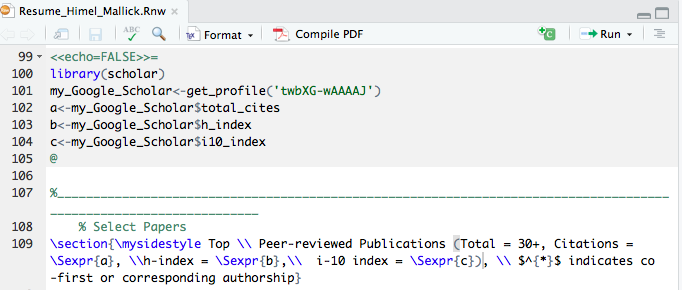
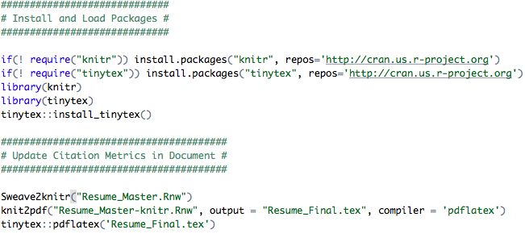

Automatically update citation metrics in your CV with a bare minimum script - Part II

Following my previous post (Part I), I received a few requests from my fellow mathematical and physical scientist colleagues who prepare their CVs and resumes in the popular typesetting system LaTeX. In this post, I will go over the steps required to automatically import Google Scholar citation metrics in a LaTeX document without any hassle or compromise.
Motivation
Similar to Part I, here are just a few things I would like to maintain:
- Ability to edit CVs and resumes in LaTeX,
- Without the need to learn a new language or markup syntax, and
- Without falling back to a manual update which can be inconvenient.
As before, here are a few things we will need: (i) A CV or resume written in LaTeX (.tex), (ii) R, and (iii) RStudio. Information about installing R and RStudio is here (it’s free!). This tutorial also assumes that you have an up-to-date Google Scholar profile. All files described in this tutorial are publicly available.
Compared to the previous post, this tutorial is more straightforward, thanks to the well-developed Sweave function, that enables effortless integration of R code into LaTeX documents, allowing one to execute and embed the results of R computations and graphics within a LaTeX document.
Without further ado, here goes the quick 3-step solution.
Step 1: Customizing the LaTeX Document
First step is to convert the existing LaTeX (.tex) document into a Sweave file (.Rnw) by simply changing the extension.
Step 2: Adding a minimal R code
Next, add the following R chunk in your .Rnw document (anywhere between \begin{document} and \end{document}):
<<echo=FALSE>>=
library(scholar)
my_Google_Scholar<-get_profile('twbXG-wAAAAJ')
a<-my_Google_Scholar$total_cites
b<-my_Google_Scholar$h_index
c<-my_Google_Scholar$i10_index
@
In the above code, I have used my own Google Scholar ID twbXG-wAAAAJ. Please don’t forget to modify to yours. You also need to call out these extracted values (a, b, and c) using the \Sexpr command in the LaTeX document as follows:
Citations = \Sexpr{a}
h-index = \Sexpr{b}
i-10 index = \Sexpr{c}
That’s it. Now you can compile this file directly from RStudio by simply executing the Compile PDF button on the right:

For your reference, the snapshot above is from my own resume which can be downloaded from here.
(Optional) Step 3: Automating with cron
Once the Steps 1 and 2 are in place, it’s as easy as pie to automate this further. In particular, you can follow the exact same steps from Part I tutorial to set up a cron job, with a few ramifications, as detailed below.

The code above assumes that Resume_Master is the master file that you intend to update and Resume_Final is the final document, whereas the Resume_Master-knitr is an intermediate file. After you execute these steps, a PDF named Resume_Final.pdf with the appended Google Scholar citation metrics will be produced.
I have not tested the above code chunk myself but please feel free to relay any comments, suggestions, or corrections my way if you encounter any issues.
Happy Tuesday! I hope you find this tutorial useful :)
Himel Mallick, PhD, FASA
Principal Investigator
Applied statistician with broad research interests in biomedical and applied data science, working on problems in machine learning and computational biology.